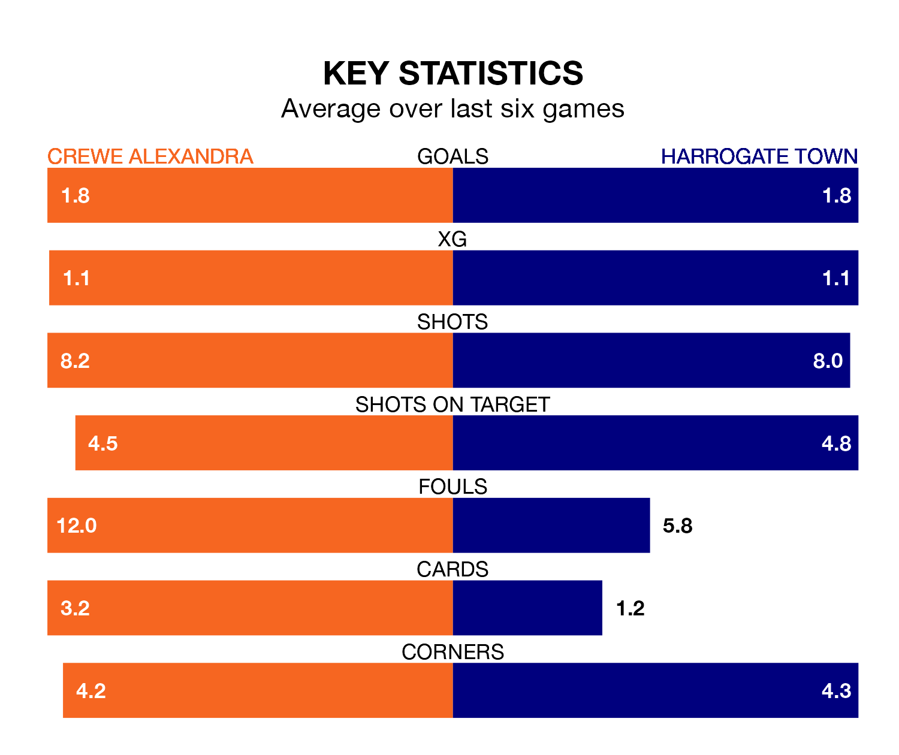

Harrogate Town travel to Crewe Alexandra on Saturday in EFL League Two.
The visitors come into the game on the back of a defeat in their last match, having lost to Mansfield Town 9-2 away, with goals from George Thomson and Abraham Odoh.
The Railwaymen, meanwhile, won their last match, 3-1 against Stockport County, with their goals scored by Mickey Demetriou, Ed Turns and Josh Austerfield.
With 59 goals in 32 games so far this season, Crewe are scoring more than average in the league with 1.8 goals per game. And they are conceding fewer than average, letting in 45 goals at a rate of 1.4 per game.
Harrogate, meanwhile, are below average scorers, with 1.3 goals per game, compared to a league average of 1.5. They have conceded 1.5 goals per game.
The Railwaymen are third in the table after 32 games, of which they have won 16 and drawn nine, earning 57 points.
Town are five places behind the home team in eighth, with 14 wins and five draws putting them on 47 points.
The visitors' Matty Daly is among the league's most creative players, racking up nine assists in 25 appearances so far this season, and holding second spot in EFL League Two's assist charts.
For Crewe, Demetriou has set up the most goals, having laid on six assists in 32 games.
Crewe are in good form in EFL League Two, with four wins and a draw from their last six games.
And also with four wins and a draw over that period, Harrogate's form is identical – they have both taken 13 points from 18.
In the last three years, Crewe and Harrogate have played each other on three occasions. Crewe won two of them and they drew once.
Their last meeting was on October 28, when Crewe won 1-0 away.
Saturday's match will be refereed by David Rock, who has taken charge of 10 EFL League Two games so far this season, issuing three red cards and booking 37 players. He has awarded one penalty.
He is yet to oversee a match featuring either Crewe or Harrogate this season.
Updated: 13:04 (UTC), 16/02/24